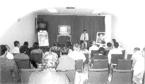

| Panorama d'événements |
[London, Ontario] Inspiré par la tournée de conférences européenne de Maître Ching Hai, le centre de Londres de l'Association internationale du Maître Suprême Ching Hai a organisé, à la fois, des séminaires en anglais et en chinois intitulés : "Voir Dieu de notre vivant grâce à l'ancienne Méthode Suprême de Méditation." Des initiés avaient placardé des affiches et distribué des dépliants, couvrant toute la ville. De grandes affiches avec des photos de Maître inondaient la plupart des rues principales de Londres, Ontario. Des pratiquants de la Méthode Pratique ont aussi pris une part active dans ce travail. Une personne c'était même portée volontaire pour distribuer des affichettes et des dépliants dans cinq villes des environs, à travers lesquelles elle passait sur le chemin de son travail.
Une autre personne qui est un membre de l'équipe dirigeant l'université locale a contacté les journaux du campus pour y faire passer une publicité. Outre l'annonce de l'événement dans les principaux journaux, ainsi qu'à la télévision et à la radio, les initiés ont aussi diffusé la nouvelle sur le câble d'une télévision privée locale, dans le programme " Le speaker du coin ". Le jour du séminaire, de nombreux initiés ainsi que des pratiquants de la Méthode Pratique ont apporté leur aide. Malgré leur fatigue, certains venaient directement de leur travail. Une dame de 80 ans, pratiquante de la Méthode Pratique qui souffre de certaines difficultés physiques, a pris deux bus pour assister sur le site où se tenait l'événement. Avant qu'il ne commence, les initiés et les pratiquants de la Méthode Pratique ont organisé la manifestation et ont travaillé ensemble en s'occupant de l'enregistrement des arrivants, de la préparation de la nourriture et des préparatifs de la réception. Durant la séance des questions-réponses, les pratiquants de la Méthode Pratique ont discuté de la manière dont ils s'étaient sentis après être devenus végétariens, et comment le végétarisme n'était pas aussi difficile qu'ils ne l'avaient imaginé, en ajoutant comment ils s'étaient sentis vraiment bien après avoir continué à suivre ce régime. Tous ceux qui avaient appris la Méthode Pratique après le séminaire ont assisté ensuite régulièrement à la méditation de groupe hebdomadaire et ont exprimé le fait qu'ils avaient ressenti une très forte puissance de bénédictions durant les méditations de groupe. Ils se préparent maintenant à l'initiation à la Méthode Guan Yin.
|  | Un séminaire récent montrant une vidéo d'une conférence de Maître à Londres, Ontario, Canada. |